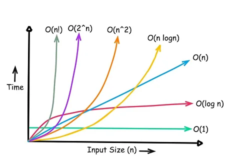
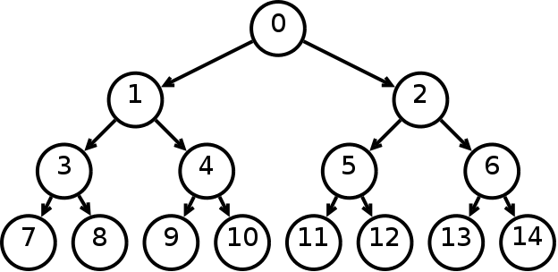

Введение
Чтобы писать эффективные программы, важно понимать, что такое эффективность и как её оценивать. На первый взгляд это может показаться неважным — ведь главное, чтобы программа работала. И это действительно важно. Но представьте, что вы пишете программу для высоконагруженной системы и вам нужно сделать алгоритм максимально быстрым. Другой пример — вы пишете программу в условиях ограниченной памяти. В таких случаях оценка скорости работы алгоритма и объёма используемой памяти становится критически важной.
В этой статье мы познакомим вас с методами оценки эффективности, которые позволят оценивать и сравнивать алгоритмы без привязки к параметрам операционной системы и оборудования, а с учётом размера входных данных.
Пример задачи: поиск книги в библиотеке
Дальше будем рассматривать следующий пример. Представьте, что вы библиотекарь, которому нужно найти книгу с определённым названием в большой библиотеке. Библиотека представляет собой тысячи книг, и разные подходы к поиску будут иметь разную эффективность. Рассмотрим несколько стратегий.
Анализ сложности
Мы можем оценивать эффективность работы алгоритма по двум параметрам: времени и памяти. Оценка по времени называется временной сложностью, а оценка по памяти — пространственной сложностью. Чтобы избежать проблемы с абсолютными величинами, и то и другое принято оценивать относительно размера входных данных.
Почему мы должны опираться на размер ввода, а не на конкретные значения? Дело в том, что замерить время секундомером или посчитать память в байтах — ненадёжно. Представьте, что вы написали алгоритм поиска книги и замерили, что он работает 2 секунды на вашем ноутбуке. На другом компьютере он может работать 1 секунду или 10 секунд, а на сервере — 10 миллисекунд. Если библиотека пополнится новыми книгами, время работы тоже изменится. Мы же хотим иметь универсальную оценку, которая будет верна для любого компьютера и любого размера библиотеки.
Задача оценки сложности не в том, чтобы оценить абсолютное время работы алгоритма и затраченную им память в точности до байта. Она в том, чтобы можно было сравнивать разные решения между собой. Например, мы не можем сказать, сколько точно времени займёт обход библиотеки, если количество книг в ней переменно и равно n. Для каждого n это время будет разным. Но мы наверняка знаем, что найти книгу по каталогу будет быстрее, чем обойти всю библиотеку в поисках нужной книги. Осталось освоить инструменты, которые позволят нам это доказать.
Нотация О-большое
Как правило, для оценки используется нотация О-большое O(f(n)). Это математическая величина, означающая верхнюю оценку для функции f(n). Здесь она используется, так как по сути любой алгоритм — это и есть функция от входных данных. Оценка сверху фактически означает, что мы рассчитываем расход времени и памяти в самом худшем случае.
Рассмотрим алгоритм поиска книги в библиотеке полным перебором. В худшем случае нужная книга будет последней, и придется перебрать каждую из n книг. То есть количество операций по поиску книги будет равно размеру входных данных. В этом случае мы говорим, что временная сложность алгоритма О-большое от n, или O(n).
Иллюстрация 1: График роста функций сложности

График показывает, что при увеличении n квадратичная сложность растёт гораздо быстрее линейной, а линейная — быстрее логарифмической (стандартный график для всех основных видов сложностей).
Основные виды сложности
Ниже рассмотрим основные виды сложностей на примере временной сложности разных алгоритмов обхода библиотеки. Примеры будут идти в строгом порядке от самого быстрого к самому медленному.
O(1) — Константная сложность
Определение: Время выполнения не зависит от размера входных данных.
Пример из библиотеки: Если книги отсортированы по уникальным номерам и у вас есть прямой доступ к любой книге по номеру, то совершенно не важно, сколько книг в библиотеке — в любом случае нам нужно просто получить прямой доступ к книге по её номеру.
Python
# Python
def get_book_by_index(books, index):
return books[index]
Java
// Java
public Book getBookByIndex(List<Book> books, int index) {
return books.get(index);
}
Go
// Go
func GetBookByIndex(books []Book, index int) Book {
return books[index]
}
Когда встречается: При прямом доступе к элементу по индексу, доступе к полям объекта, простых арифметических операциях, сравнении значений.
Когда говорим о сложности O(1) по памяти: когда алгоритм использует одно и то же количество дополнительной памяти независимо от размера входных данных. Например, если у нас есть функция поиска книги по номеру, ей не нужно создавать дополнительные структуры данных — достаточно иметь переменную для индекса.
O(log n) — Логарифмическая сложность
Определение: Время выполнения растёт логарифмически при увеличении входных данных. По умолчанию подразумевается логарифм по основанию 2.
Пример из библиотеки: Бинарный поиск в отсортированном по алфавиту каталоге. Вы открываете книгу посередине, смотрите в нужную сторону и продолжаете делить пополам.
Python
# Python
def binary_search(sorted_books, target):
left, right = 0, len(sorted_books) - 1
while left <= right:
mid = (left + right) // 2
if sorted_books[mid] == target:
return mid
elif sorted_books[mid] < target:
left = mid + 1
else:
right = mid - 1
return -1
Java
// Java
public int binarySearch(List<String> sortedBooks, String target) {
int left = 0;
int right = sortedBooks.size() - 1;
while (left <= right) {
int mid = left + (right - left) / 2;
String midBook = sortedBooks.get(mid);
if (midBook.equals(target)) {
return mid;
} else if (midBook.compareTo(target) < 0) {
left = mid + 1;
} else {
right = mid - 1;
}
}
return -1;
}
Go
// Go
func BinarySearch(sortedBooks []string, target string) int {
left, right := 0, len(sortedBooks)-1
for left <= right {
mid := left + (right-left)/2
midBook := sortedBooks[mid]
if midBook == target {
return mid
} else if midBook < target {
left = mid + 1
} else {
right = mid - 1
}
}
return -1
}
Когда встречается: При работе с отсортированными структурами данных, сбалансированными деревьями поиска, алгоритмах "разделяй и властвуй".
Когда говорим о сложности O(log n) по памяти: когда алгоритм использует память, пропорциональную глубине рекурсии или уровню деления данных. Типичный пример — рекурсивные алгоритмы, где глубина рекурсии растёт логарифмически. При поиске книги в каталоге мы не храним всю информацию одновременно, а только текущий сегмент поиска.
Сноска: Как получается логарифмическая сложность Давайте разберём на примере бинарного поиска. Предположим, я загадала число от 0 до 15. Представим, что вы пытаетесь угадать его, используя бинарный поиск. Алгоритм будет такой:
- Шаг 1: узнаем, что число меньше 8 → остаётся 8 вариантов
- Шаг 2: узнаем, что число меньше 4 → остаётся 4 варианта
- Шаг 3: узнаем, что число меньше 2 → остаётся 2 варианта
- Шаг 4: остаётся 1 элемент — это и есть искомое число
Вы отгадали число за 4 шага. Это максимально возможное количество шагов при бинарном поиске среди 16 элементов.
Чтобы посчитать максимальное количество шагов для n элементов, нужно ответить на вопрос: сколько раз необходимо поделить количество элементов на 2, чтобы получить только один элемент? Или, если сформулировать иначе — в какую степень нужно возвести 2, чтобы получить данное количество элементов. Это и есть логарифм по основанию 2.
log₂16 = 4 (логарифм 16 по основанию 2 равен 4)
В записи O(log n) основание обычно не указывают, потому что при переходе между разными основаниями разница только в константе (log₂10 ≈ 3.32, log₁₀10 ≈ 1, logₑ10 ≈ 2.3), а константы в O-нотации отбрасываются.
Иллюстрация 2: Дерево бинарного деления

Глубина дерева = 4 уровня
log₂16 = 4 шага в худшем случае
Это показывает, что каждый шаг деления уменьшает количество элементов вдвое, а глубина дерева равна логарифму.
O(n) — Линейная сложность
Определение: Время выполнения растёт линейно при увеличении входных данных.
Пример из библиотеки: Последовательный просмотр всех книг на полке, чтобы найти нужную.
Python
# Python
def linear_search(books, target):
for i, book in enumerate(books):
if book == target:
return i
return -1
Java
// Java
public int linearSearch(List<String> books, String target) {
for (int i = 0; i < books.size(); i++) {
if (books.get(i).equals(target)) {
return i;
}
}
return -1;
}
Go
// Go
func LinearSearch(books []string, target string) int {
for i, book := range books {
if book == target {
return i
}
}
return -1
}
Когда встречается: При однократном проходе по всем элементам массива/списка, поиске элемента в несортированной структуре, вычислении суммы/максимума/минимума.
Когда говорим о сложности O(n) по памяти: когда алгоритм использует дополнительную память пропорционально размеру входных данных. При поиске книги перебором нам может понадобиться счётчик для индекса или временный список для найденных книг — память растётся линейно с количеством книг.
Иллюстрация 3: Визуализация линейного поиска
Ищем книгу D: [📕A] [📗B] [📘C] [📙D] [📓E] [📔F]
↓ ↓ ↓ ↓
1 2 3 4 ← нашли!
В худшем случае (книга F) проверим все 6 книг
Сложность: O(6) ≈ O(n), где n — количество книг
O(n log n) — Линейно-логарифмическая сложность
Определение: Комбинация линейной и логарифмической сложности.
Пример из библиотеки: Сортировка книг по алфавиту (эффективные алгоритмы сортировки).
Python
# Python
def sort_books(books):
return sorted(books) # Timsort - O(n log n)
Java
// Java
import java.util.*;
public List<String> sortBooks(List<String> books) {
List<String> sortedBooks = new ArrayList<>(books);
Collections.sort(sortedBooks); # TimSort - O(n log n)
return sortedBooks;
}
Go
// Go
import "sort"
func SortBooks(books []string) []string {
sorted := make([]string, len(books))
copy(sorted, books)
sort.Strings(sorted) # QuickSort/PatienceSort - O(n log n)
return sorted
}
Когда встречается: При эффективных алгоритмах сортировки (быстрая сортировка, сортировка слиянием), некоторых алгоритмах на деревьях.
Когда говорим о сложности O(n log n) по памяти: когда алгоритм требует дополнительную память для временного хранения промежуточных результатов деления и слияния. При сортировке книг по алфавиту некоторые алгоритмы требуют O(n log n) дополнительной памяти.
O(n²) — Квадратичная сложность
Определение: Время выполнения растётся квадратично при увеличении входных данных.
Пример из библиотеки: Поиск дубликатов книг сравнением каждой книги с каждой другой.
Python
# Python
def find_duplicates_slow(books):
duplicates = []
for i in range(len(books)):
for j in range(i + 1, len(books)):
if books[i] == books[j]:
duplicates.append(books[i])
return list(set(duplicates))
Java
// Java
public List<String> findDuplicatesSlow(List<String> books) {
Set<String> duplicates = new HashSet<>();
for (int i = 0; i < books.size(); i++) {
for (int j = i + 1; j < books.size(); j++) {
if (books.get(i).equals(books.get(j))) {
duplicates.add(books.get(i));
}
}
}
return new ArrayList<>(duplicates);
}
Go
// Go
func FindDuplicatesSlow(books []string) []string {
seen := make(map[string]bool)
for i := 0; i < len(books); i++ {
for j := i + 1; j < len(books); j++ {
if books[i] == books[j] {
seen[books[i]] = true
}
}
}
result := make([]string, 0, len(seen))
for book := range seen {
result = append(result, book)
}
return result
}
Когда встречается: При наличии цикла в цикле по одной структуре данных. Например, если для каждой из n книг в библиотеке мы должны проверять все остальные книги. Фактически мы проверим каждую из n книг с каждой из n книг, что даёт n×n проверок.
Когда говорим о сложности O(n²) по памяти: когда нужно хранить информацию о парах элементов. При поиске дубликатов книг сравнением каждой книги с каждой другой нам может понадобиться матрица сравнений размером n×n или список всех возможных пар — это и даёт квадратичный расход памяти.
Можно также возразить, что даже в худшем случае для каждой книги мы проверим не все n, а только n-1 книг. Кроме того, найдя дубликат B для книги A, нет смысла искать дубликат для книги B — он уже найден. Это отличное замечание, и такие оптимизации действительно сокращают число операций, но не меняют квадратичный характер роста — почему именно так, мы разберём чуть ниже.
Упрощение выражений сложности
Основная идея анализа сложности — понять, как поведёт себя алгоритм при очень большом размере входных данных. Для этого мы используем два основных правила упрощения.
Отбрасывание констант
Константы (числа перед n, такие как 2n, 3n²) становятся несущественными по сравнению с ростом самой функции.
Представьте, что у нас есть алгоритм со сложностью 3n² и алгоритм со сложностью n². Когда n = 1000, разница будет заметной (3 миллиона vs 1 миллион операций), но когда n = 1 миллион, оба алгоритма будут работать «долго», и особенно эта разница будет заметна относительно медленнее растущих зависимостей — например, линейной. Здесь важно не точное число операций, а то, что они растут квадратично.
Поэтому при поиске дубликатов в библиотеке, даже если мы проверяем не все n×n пар, а примерно n×(n-1)/2 ≈ 0.5n², мы всё равно говорим о сложности O(n²), потому что ключевое поведение — квадратичный рост.
Отбрасывание слагаемых
При больших значениях n наиболее быстро растущий член доминирует над остальными, поэтому мы можем отбросить все слагаемые кроме главного.
Например, рассмотрим выражение 0.5n² + 3n + 1000:
- При n = 10: 0.5·100 + 3·10 + 1000 = 50 + 30 + 1000 = 1080
- При n = 100: 0.5·10000 + 3·100 + 1000 = 5000 + 300 + 1000 = 6300
- При n = 1000: 0.5·1000000 + 3·1000 + 1000 = 500000 + 3000 + 1000 = 504000
Заметьте, как с ростом n вклад слагаемых 3n и 1000 становится всё менее значительным по сравнению с 0.5n². Поэтому мы говорим, что сложность O(n²), а не O(0.5n² + 3n + 1000).
Правило простое: находим член с самым быстрым ростом (как правило, старшая степень) и отбрасываем все остальные слагаемые и константы перед ним.
Заключение
В этой статье мы познакомились с основными видами сложности алгоритмов — от константы O(1) до квадратичной O(n²). Вы узнали, как определять сложность простых алгоритмов и понимать, как ведёт себя алгоритм при росте входных данных. Шпаргалка для собеседований:
Сравнительная таблица видов сложности
| Сложность | Скорость роста | Пример | Когда встречается |
|---|---|---|---|
| O(1) | Константная | Доступ по индексу books[5] |
Массив/список |
| O(log n) | Очень медленная | Бинарный поиск в каталоге | Отсортированные данные, деревья |
| O(n) | Линейная | Линейный поиск — перебор всех книг | Один проход по данным |
| O(n log n) | Быстрее квадратичной | Сортировка книг по алфавиту | Эффективная сортировка |
| O(n²) | Квадратичная (быстрая) | Вложенные циклы: каждая книга с каждой | Цикл в цикле |